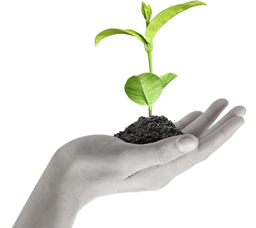
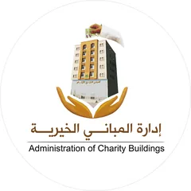
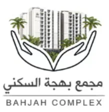
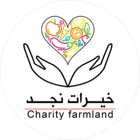
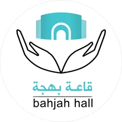

Bahjah Waqf · Sadaqah Jariyah for orphans
Make your giving an impact that never ends
Today's charity… its impact continues.
Your gift doesn't only meet a moment's need; it helps build a sustainable source of income that serves orphans.
- Non-governmental charity since 2014
- Endowment revenue returns to Bahjah and its projects
- Direct contact with Bahjah

The idea of waqf
What is Bahjah Waqf?
A waqf is ongoing charity (Sadaqah Jariyah): the asset remains, and its benefit continues.
The Omani Bahjah Orphan Society holds endowments of apartments, land and anything that can be endowed, and all of their revenue returns to the society and its projects. Through them it seeks a sustainable income for all orphans and widows.
-
1
Your gift
The amount you choose
-
2
An endowed asset
Buildings, apartments, land and anything that can be endowed
-
3
Lasting revenue
Returns to Bahjah and its projects serving orphans
Source: Bahjah's official profile.
Impact
Impact that lasts for years
-
Supporting families
Through its endowments, Bahjah seeks a sustainable income for all orphans and widows.
-
Caring for orphans
Monthly financial support, alongside emotional, health, educational and social support.
-
Sustainable impact
Ongoing charity whose benefit lasts; its revenue returns to Bahjah and its projects.
Bahjah's waqf projects
Endowments building orphans' future
Projects through which Bahjah aims to create a sustainable income for orphans, as described in its profile and project pages.
- 10
- charitable waqf buildings for orphans: the 2040 goal
- 2020
- first charity building completed
- 156
- apartments in the Bahjah Waqf Complex
- 2014
- year Bahjah was founded
-

Charitable waqf buildings
Bahjah aims to complete 10 charitable endowment buildings for orphans by 2040 to ensure a sustainable income, which companies and individuals can sponsor for years. The first building was completed in 2020.
-

Bahjah Waqf Complex for Orphans
A residential and commercial complex on 2,000 m² of land: four 10-storey buildings with 156 apartments and 28 shops, plus a library, a sewing workshop and classrooms.
Estimated project cost: OMR 2,000,000 (per Bahjah's profile)
-
Bahjah Industrial Waqf Complex
An environmentally friendly project with three production lines: bottling mineral water, tissue paper and wood recycling.
Estimated cost: OMR 80k for water, 75k for tissue, 60k for wood recycling
-

Khairat Najd agricultural complex
Agricultural projects as a sustainable income for orphans, from wheat and other crops.
-

Bahjah Hall
A hall equipped for courses, workshops and lectures, seating more than 80 people, rented out as a source of income for orphans.
Source: Bahjah's official profile (pages 10 and 19) and the project pages on its website. Figures and estimated costs as published by Bahjah. · View source
Your gift
Choose your gift to the waqf
Your gift: 50 OMR
You contact the Omani Bahjah Orphan Society directly on its official WhatsApp.
The button opens Bahjah's WhatsApp with a ready message including your amount; Bahjah's team then contacts you to complete the gift and allocate it to the waqf.
Or by bank transfer
- Bank Muscat 0397000008880035
- Bank Dhofar 01041328888001
Account name: Omani Bahjah Orphan Society (جمعية بهجة العمانية للأيتام)
After transferring, send the receipt on WhatsApp mentioning "وقف بهجة" (Bahjah Waqf) so your gift is allocated to the waqf.
Send the transfer receiptFor companies & major donors
Help build an endowment that lasts
Bahjah's charitable waqf buildings are designed so companies and individuals can sponsor them for years, and Bahjah holds endowments of apartments, land and anything that can be endowed.
- Sponsor a charitable waqf building
- Endow an apartment, land or other asset
- Corporate and family giving
Trust & transparency
A trusted society serving orphans since 2014
Non-governmental charity
Omani Bahjah Orphan Society is classified as a non-governmental charitable association for orphans.
Founded 10 February 2014
Founded on 10/2/2014 in accordance with Royal Decree No. 14/2000.
Our vision
To provide care and assistance to orphans inside and outside their homes. Our goal is to give them hope for a secure future and better opportunities, so that every child in our care grows up psychologically and socially healthy, fully integrated in society.
Certificates and awards received by Bahjah
-
 ISO certification
2023
ISO certification
2023
-
 Sultan Qaboos Award for Voluntary Work
2013
Sultan Qaboos Award for Voluntary Work
2013
-
 Al Sanabel Award for Service Excellence in the GCC
2016
Al Sanabel Award for Service Excellence in the GCC
2016
-
 Honoured as best association by the Human Rights Commission
2019
Honoured as best association by the Human Rights Commission
2019
-
 First place in the Sultanate at the OQ level
2020
First place in the Sultanate at the OQ level
2020
-
 Distinguished International Institution Award for Social Innovation, Kingdom of Bahrain
2023
Distinguished International Institution Award for Social Innovation, Kingdom of Bahrain
2023
-
 Khalid Al-Essa Al-Saleh Award (Kuwait), Arab-world level
2024
Khalid Al-Essa Al-Saleh Award (Kuwait), Arab-world level
2024
As listed on Bahjah's official website.
FAQ
Everything you need to know
What is Bahjah Waqf?
It is your contribution to the endowments (waqf) of the Omani Bahjah Orphan Society. Bahjah holds endowments of apartments, land and anything that can be endowed, and all of their revenue returns to the society and its projects, seeking a sustainable income for orphans and widows.
Can I give any amount?
Yes. Choose 10, 25, 50 or 100 OMR, or type your own amount under "Other amount".
How do I give?
Choose an amount and tap "Give to Bahjah Waqf now". Bahjah's official WhatsApp opens with a ready message and the team contacts you to complete the gift. You can also transfer to Bahjah's bank accounts and send the transfer receipt on WhatsApp, mentioning "وقف بهجة" (Bahjah Waqf).
Is it a one-off gift, or can I give regularly?
You can give once or repeat your gift whenever you like. For regular giving, or to sponsor a charitable waqf building for years, contact Bahjah to arrange the right method.
Where does my gift go?
Waqf contributions go to Bahjah's endowments, whose revenue returns to the society and its projects serving orphans and widows. To make sure your gift is allocated to the waqf, mention "Bahjah Waqf" when you contact Bahjah or send your transfer receipt.
Can I endow an apartment or land?
Yes. According to Bahjah's profile: "We hold endowments of apartments, land and anything that can be endowed." Contact Bahjah for details.
Can companies contribute?
Yes. Bahjah's charitable waqf buildings are designed so companies and individuals can sponsor them for years. Contact Bahjah to discuss the form of your contribution.
How can I contact Bahjah?
Phone: 92877577 – 23289966 · WhatsApp: 92877577 · Email: bahjah1.omani@gmail.com · Address: Dhofar / Salalah East / 23 July Street / next to Bank Dhofar
Make your charity an impact that never ends
Today's charity… its impact continues.